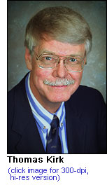

Building
134
Building
134P.O. Box 5000
Upton, NY 11973-5000
phone 631 344-2345
fax 631 344-3368
www.bnl.gov
managed for the U.S. Department of Energy
by Brookhaven Science Associates, a company
founded by Stony Brook University and Battelle
News Release
Number: 03-84
Released: November 18, 2003
Contact: Diane Greenberg, 631
344-2347 or
Mona S. Rowe, 631 344-5056
Brookhaven Lab’s Thomas Kirk
Elected
a Fellow of the
American Association for the
Advancement of Science
Upton, NY – Thomas Kirk, Associate Laboratory Director for High Energy and Nuclear Physics at the U.S. Department of Energy’s Brookhaven National Laboratory, has been elected a Fellow of the American Association for the Advancement of Science (AAAS). AAAS is the world’s largest federation of scientists, with almost 140,000 members and 272 affiliated organizations from 130 countries, serving a total of 10 million individuals.
Kirk was one of 348 members elected as Fellows by their peers in 2003. The Fellows were chosen because of their efforts to advance science or foster applications that are deemed scientifically or socially distinguished. New Fellows will be presented with an official certificate and a gold and blue rosette pin on February 14, at the 2004 AAAS annual meeting in Seattle, Washington.
{kind=link}
Kirk’s citation reads: “For innovative research in particle and nuclear physics across a wide range, for leadership in developing new accelerator facilities and detectors, and for excellence in research administration.”
“I am pleased and honored to receive this acknowledgement of my performance,” Kirk said. “I’ve had a rewarding career in physics, and, with many new projects on the horizon, I anticipate more interesting challenges in the future.”
Responsible for an annual budget of $190 million, and a staff of about 800, Kirk oversees Brookhaven’s Collider-Accelerator Department, Physics Department, Center for Accelerator Physics, Instrumentation Division, Superconducting Magnet Division, and the Relativistic Heavy Ion Collider-Alternating Gradient Synchrotron Users Office.
Under Kirk’s direction, Brookhaven develops and maintains large facilities that are used by scientists from around the world. These facilities include Brookhaven’s newest accelerator, the Relativistic Heavy Ion Collider (RHIC); the Alternating Gradient Synchrotron (AGS), an accelerator used for three Nobel Prizes in physics; the NASA Space Radiation Laboratory, where research on the biological effects on ionizing radiation in space is carried out; the Tandem Van de Graff, which is used by commercial agencies to test the effects of heavy ions on integrated circuits and other devices; and the Brookhaven Linac Isotope Producer, which produces radioisotopes for both medical uses and physics research.
Kirk is also involved in initiating and/or promoting numerous high energy and nuclear physics-related projects for the future. For instance, improvements to RHIC are already in the research and development phase, and the QCDOC-based BNL Lattice Gauge Facility will make possible advanced calculations to solve physics problems with the installation of a 10-teraflop supercomputer at Brookhaven.
Kirk earned a B.S. in engineering physics from the University of Colorado in 1962 and a Ph.D. in physics from the University of Washington in 1967. He first came to Brookhaven in 1965 while working on his thesis. After earning his doctorate, he continued working on high-energy physics research at Brookhaven as a member of the Harvard University staff. In 1972, Kirk became an associate professor of physics at the University of Illinois, Urbana, and, in 1977, he joined Fermi National Accelerator Laboratory, and then Argonne National Laboratory in 1989. Kirk was also involved in the design of the Superconducting Super Collider’s (SSC) solenoidal detector and was co-spokesperson for the associated worldwide physics collaboration. He served as Deputy Director of the SSC Laboratory for closeout of the SSC Project.
Kirk joined Brookhaven in 1994 in his current position. He also serves as Brookhaven’s program director for the Laboratory’s accelerator and detector participation in the Large Hadron Collider at CERN, the European physics laboratory. From 1980 to present, Kirk has been an advisor and consultant for the U.S. Department of Energy and the National Science Foundation on numerous physics topics. He became a Fellow of the American Physical Society in 1989, and, in 2003, he was given the George Norlin Distinguished Alumni Award from the University of Colorado.